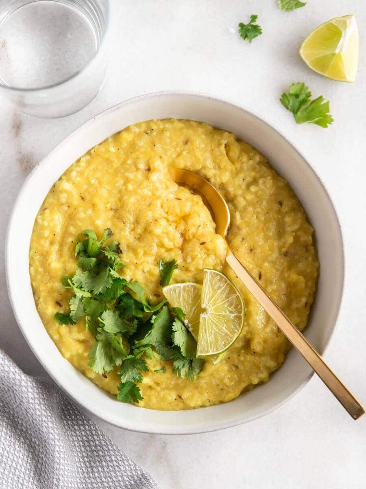

Tilbake til start
Take One: Kitchari

Indisk klostermat, Kitchari - nam!!
Ingredienser
- linser
- ris
- brensel
- vann i en kjele
- bløtlegg og skyll linsene og risen, hver for seg
- legg alt i en kjele
- kok til alt er mørt, tilsett litt salt
- spis, men først mantra
- lev, pust, vær